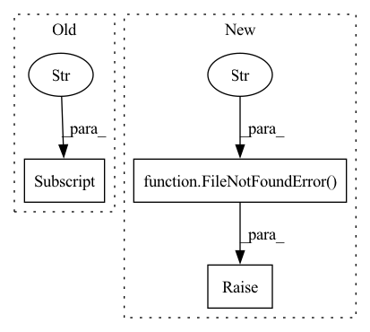

Pattern ID :6963
Before Change
if not os.path.exists(C["mount_path"]):
raise FileNotFoundError(
"Invalid mount path: {}! Please mount manually: {} or Set init parameter `auto_mount=True`".format(
C["mount_path"] , mount_command
)
)
else:After Change
// It will be a nfs path. The client provider will be used
if not C["auto_mount"]:
if not os.path.exists(C["mount_path"]):
raise FileNotFoundError(
f"Invalid mount path: {C["mount_path"]}! Please mount manually: {mount_command} or Set init parameter `auto_mount=True`"
)
else:
// Judging system type
sys_type = platform.system()
if "win" in sys_type.lower():In pattern: SUPERPATTERN
Frequency: 4
Non-data size: 3
Instances Fragment ID: 23290979
Project Name: microsoft/qlib
Commit Name: ea5f14ce124fb7f20b76279de2dbb07302a2546f
Time: 2020-11-13
Author: dw1920@nyu.edu
File Name: qlib/__init__.py
M Class Name: AnonimousClass
N Class Name: AnonimousClass
M Method Name: _mount_nfs_uri(1)
N Method Name: _mount_nfs_uri(1)
M Parent Class:
N Parent Class:
M File Name: qlib/__init__.py
N File Name: qlib/__init__.py
M Start Line: 99
M End Line: 188
N Start Line: 104
N End Line: 182
Before Change
//path = max(list((cfg.ckpt_path).glob("*.pth")))
log.info(f"Loading checkpoint {ckpt_path}")
ckpt = torch.load(ckpt_path)
first_epoch = ckpt["epoch"] + 1
self.model.load_state_dict(ckpt["model_state_dict"])
if is_train:
if "optimizer_state_dict" in ckpt:After Change
return
if not exists(ckpt_path):
raise FileNotFoundError(f" ckpt {ckpt_path} not found" )
log.info(f"Loading checkpoint {ckpt_path}")
ckpt = torch.load(ckpt_path)
self.model.load_state_dict(ckpt["model_state_dict"]) Fragment ID: 23290976
Project Name: intel-isl/open3d-ml
Commit Name: 787965c650050f77e9712d85d295adbd471939d1
Time: 2020-10-06
Author: 49262224+YilingQiao@users.noreply.github.com
File Name: ml3d/torch/pipelines/semantic_segmentation.py
M Class Name: SemanticSegmentation
N Class Name: SemanticSegmentation
M Method Name: load_ckpt(3)
N Method Name: load_ckpt(3)
M Parent Class: BasePipeline
N Parent Class: BasePipeline
M File Name: ml3d/torch/pipelines/semantic_segmentation.py
N File Name: ml3d/torch/pipelines/semantic_segmentation.py
M Start Line: 322
M End Line: 339
N Start Line: 319
N End Line: 343
Before Change
if not os.path.exists(os.path.join(args.dest, args.predir, s.lstrip("WFDB_"))):
os.makedirs(os.path.join(args.dest, args.predir, s.lstrip("WFDB_")))
codes = dx_codes[dx_codes[convert_to_column_names(s)] > 0]["SNOMEDCTCode"] .to_numpy().astype(str)
dir_path = os.path.realpath(os.path.join(args.root, s))
search_path = os.path.join(dir_path, "**/*." + args.ext)After Change
try:
classes, _ = ecg_utils.get_physionet_weights(meta_path)
except FileNotFoundError:
raise FileNotFoundError(
"cannot find the metadata file for labeling (weights.csv)"
"please ensure that files are located in --meta-dir "
"or download from https://github.com/physionetchallenges/evaluation-2021."
f"--meta-dir: {meta_path}"
)
dir_path = os.path.realpath(os.path.join(args.root, s))
search_path = os.path.join(dir_path, "**/*." + args.ext)
Fragment ID: 23290980
Project Name: jwoo5/fairseq-signals
Commit Name: 8ebaab5a615a8a7717ba76d3d17c557e0fb14325
Time: 2021-08-11
Author: ojw0123@korea.ac.kr
File Name: fairseq_signals/data/ecg/preprocess/preprocess_physionet2021.py
M Class Name: AnonimousClass
N Class Name: AnonimousClass
M Method Name: main(1)
N Method Name: main(1)
M Parent Class:
N Parent Class:
M File Name: fairseq_signals/data/ecg/preprocess/preprocess_physionet2021.py
N File Name: fairseq_signals/data/ecg/preprocess/preprocess_physionet2021.py
M Start Line: 47
M End Line: 86
N Start Line: 46
N End Line: 65